ENGINEERING • MEDICAL TECHNOLOGY • INNOVATION
Electronics Engineering Technology
Medical Laser Systems | Medical Device Servicing | Electronics Troubleshooting | Calibration
Kitchener, Ontario, Canada
Explore My Experience Contact MeI am an Electronics Engineering Technology student at Conestoga College with a Bachelor of Science in Electronics and Electrical Engineering.
I currently work as a Technical Service Associate Co-op at Clarion Medical Technologies, where I gain practical experience servicing, troubleshooting, repairing and performing quality control on advanced medical, laser and electro-optical equipment.
My technical interests include medical laser technology, electronics, optical systems, embedded systems, equipment diagnostics and engineering innovation.
I enjoy understanding how complex systems work, identifying faults and developing practical solutions that improve equipment reliability and performance.
Clarion Medical Technologies Inc.
Cambridge, Ontario | May 2026 – Present
Contribution: Contributed to saving the company thousands of dollars within the first two months by repairing and refurbishing medical laser handpieces that otherwise would have required replacement.
Tyllium
Lagos, Nigeria | 2019 – 2021
Medical technologies and systems I have worked with during my technical service associate experience.
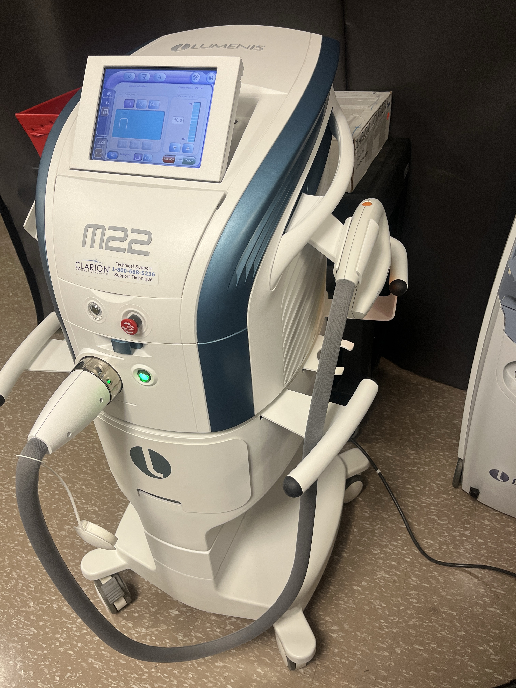
Intense pulsed light medical aesthetic platform.
Troubleshooting QC Calibration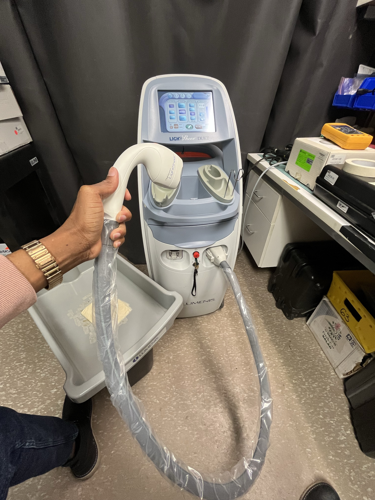
Diode laser hair-removal systems and handpieces.
Handpiece Repair Diagnostics Refurbishment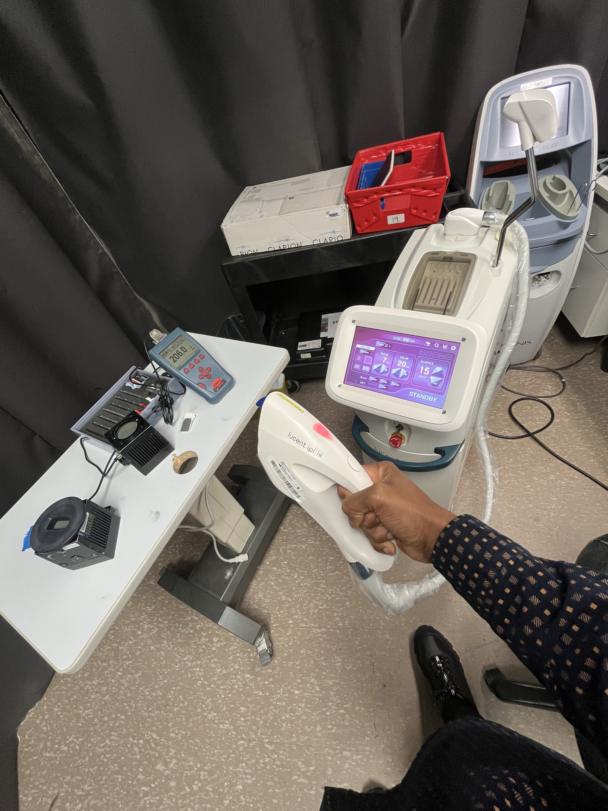
IPL aesthetic treatment system.
QC Testing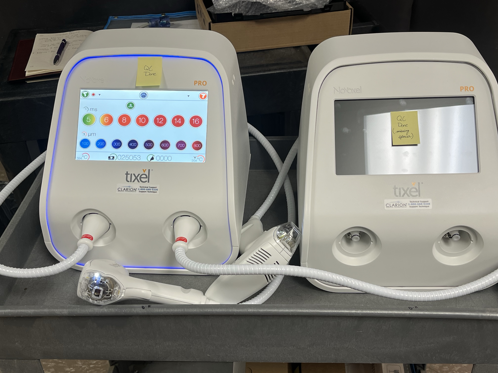
Aesthetic dermatological treatment equipment.
Inspection QC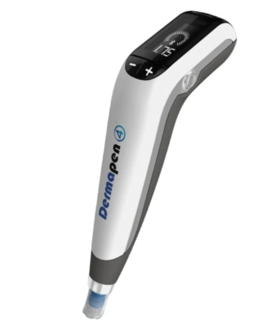
Dermatological microneedling equipment.
QC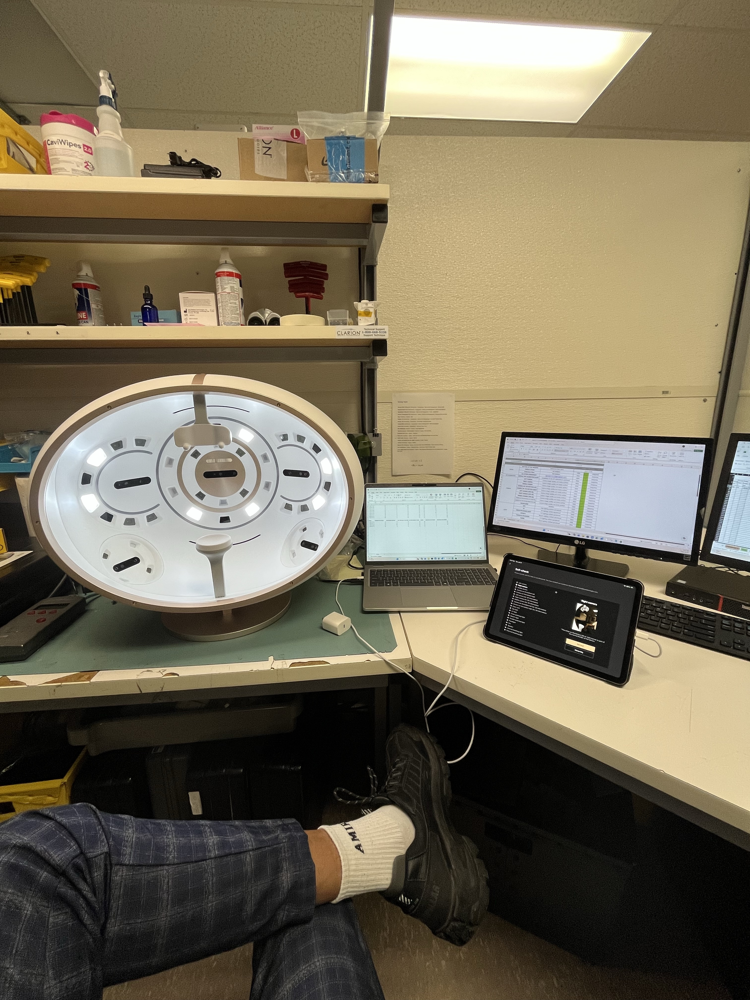
Facial imaging and skin analysis equipment.
Inspection QC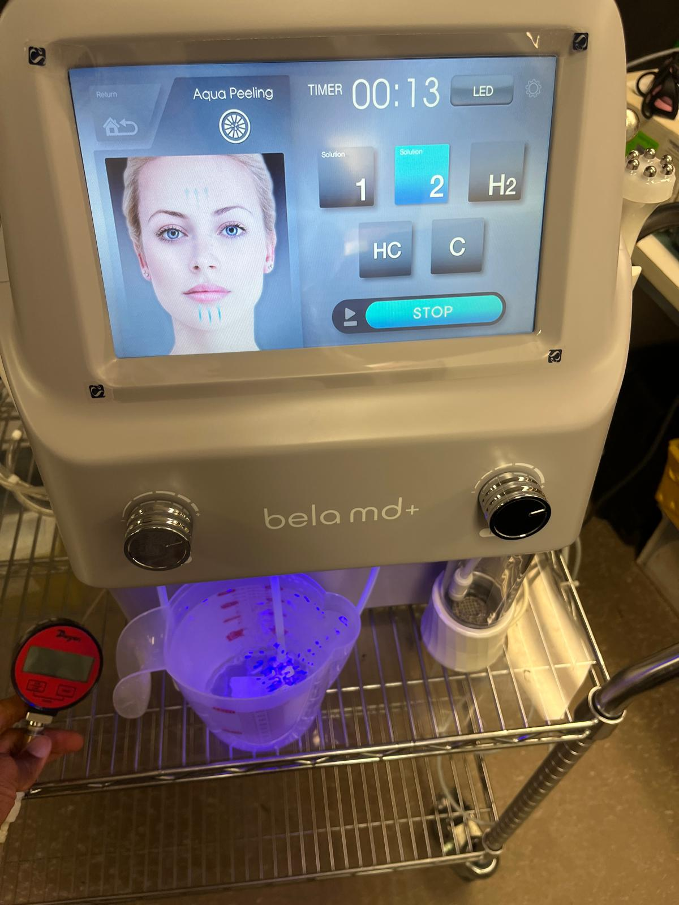
Multifunctional aesthetic treatment system.
CSA Work Inspection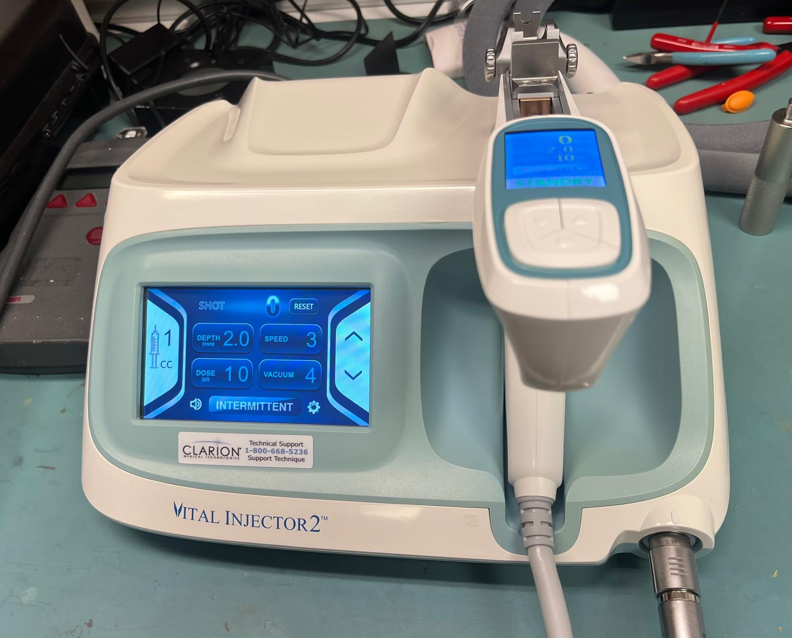
Medical aesthetic injector system.
Repair QC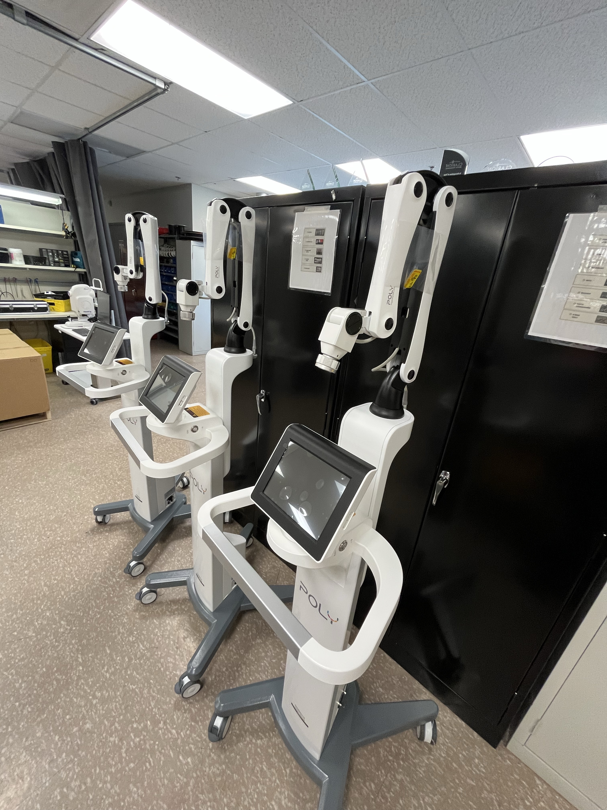
LED light therapy equipment.
Installation QC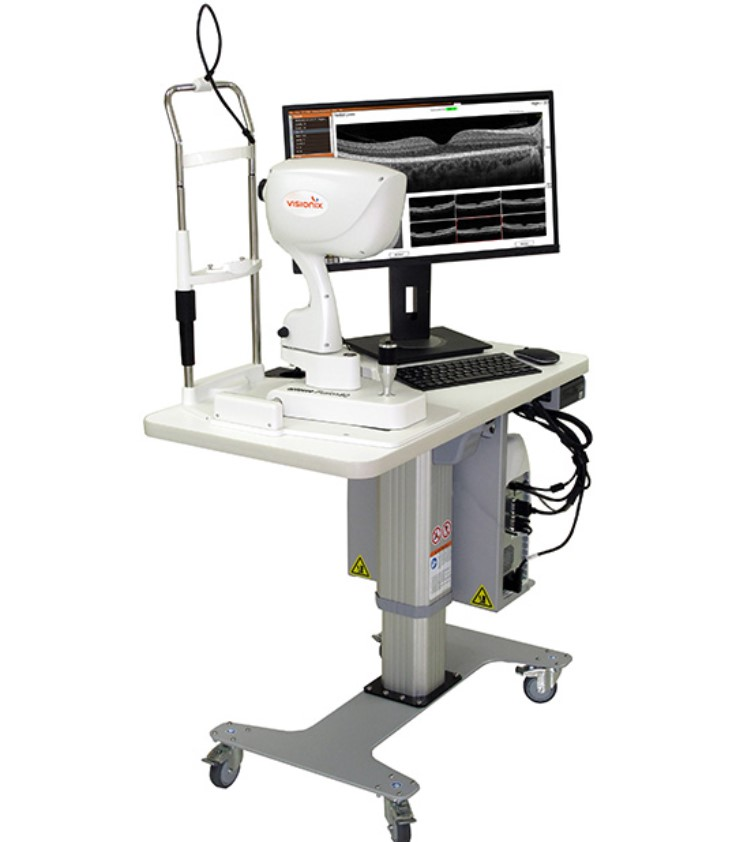
Optical coherence tomography imaging system.
Installation QC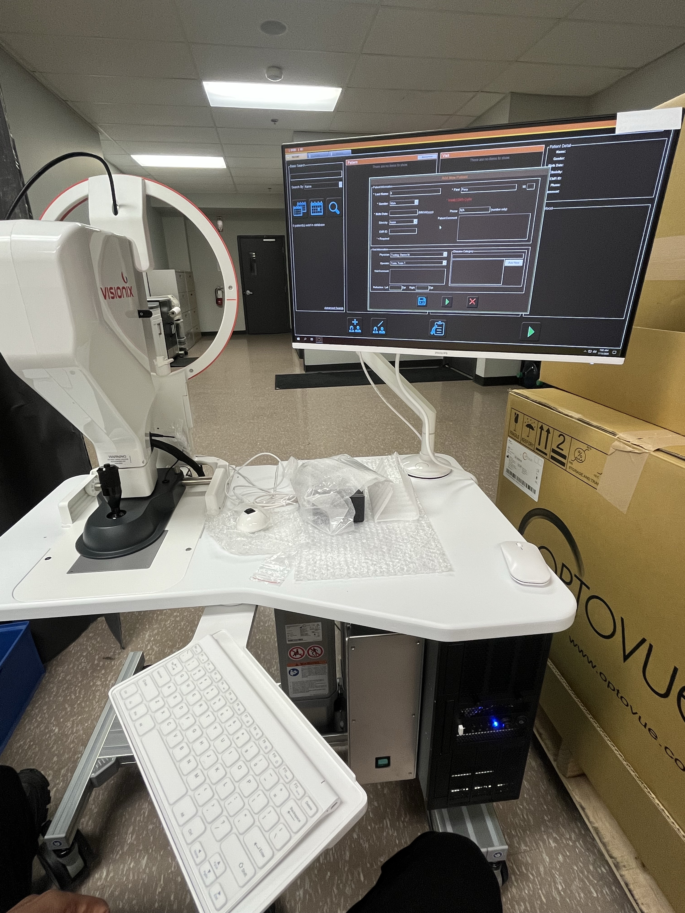
OCT ophthalmic imaging system.
Installation QC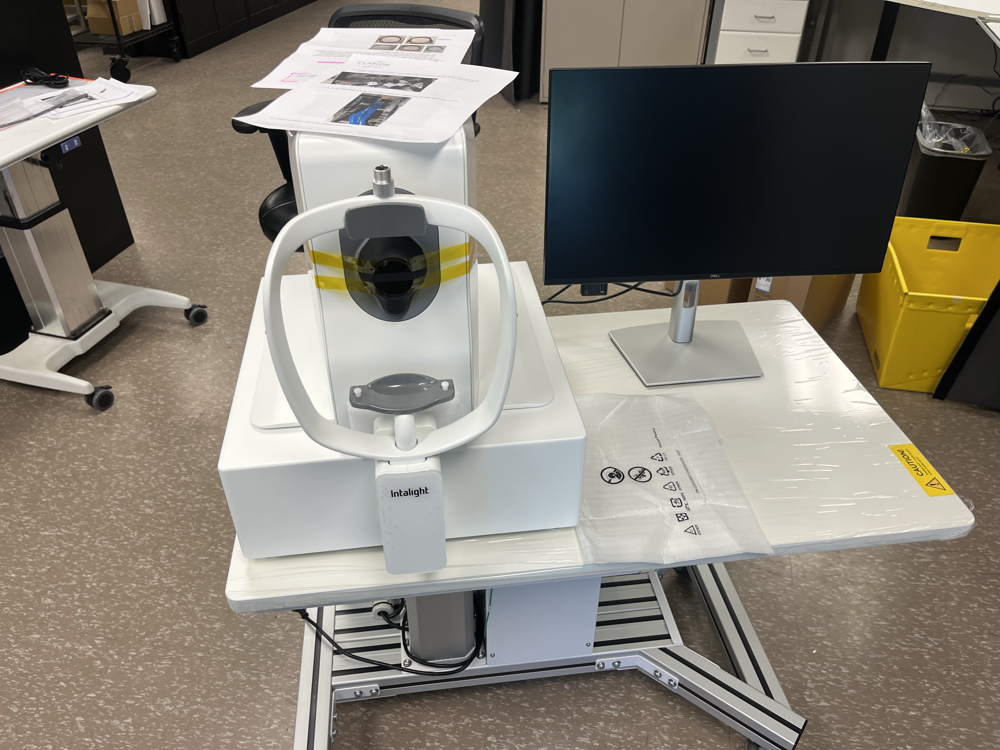
High-speed optical coherence tomography system.
CSA Work QC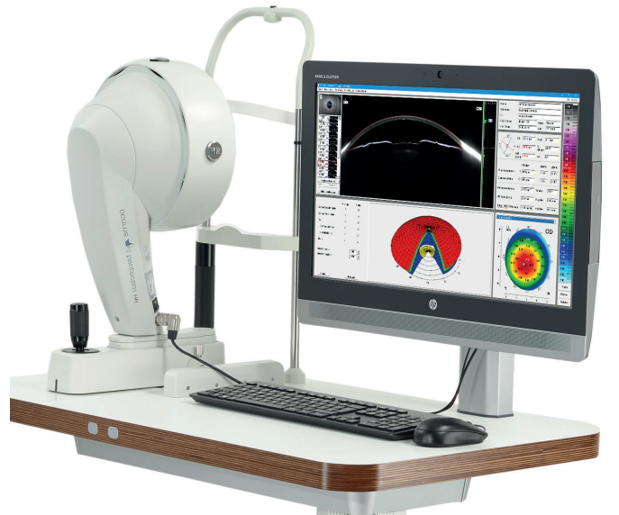
Ophthalmic corneal imaging and diagnostic system.
Installation QC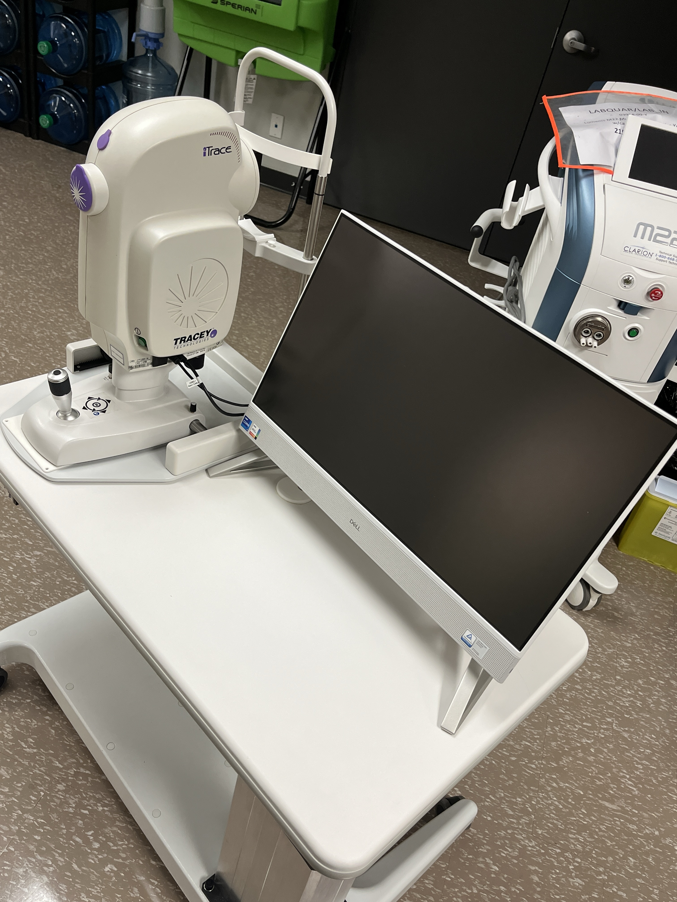
Wavefront aberrometer and ophthalmic diagnostic system.
Inspection QCComputerized digital visual acuity chart.
Installation QCDigital module slit lamp ophthalmic equipment.
Module Replacement Repair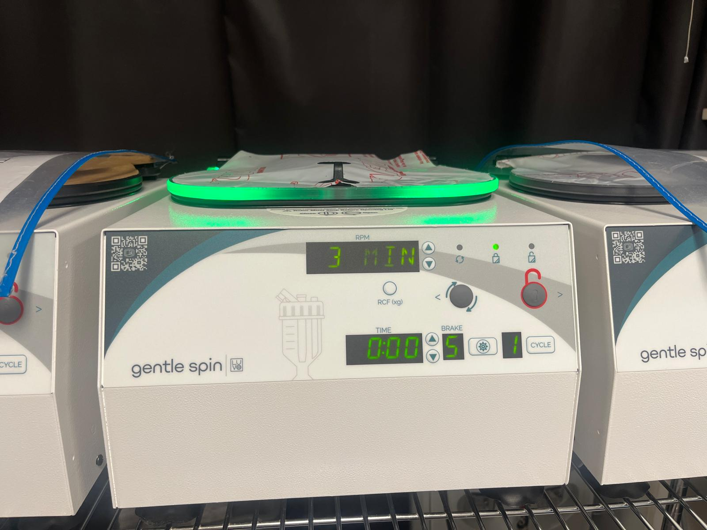
Blood separation centrifuge system.
Inspection QCMedical cooling system.
Inspection QCMedical equipment fume and plume extraction system.
CSA Work Inspection2025 | TM4C123 Microcontroller
Electronics Engineering Laboratory Project
2024 – Present
Conestoga College | Cambridge, Ontario
2024 – Present
Relevant coursework: Electronics Engineering Skills, Digital Electronics, AC Circuits, Microprocessors, Transmission Lines & Fiber Optics, and Principles of Telecommunication Systems.
Obafemi Awolowo University | Osun State, Nigeria
2015 – 2022
Relevant coursework: Signals and Telecommunication Systems, Digital Signal Processing, Communication Principles, electronic circuit analysis and laboratory testing.
I am interested in medical technology, laser systems, electronics engineering, technical service and innovative engineering solutions.
Location: Kitchener, Ontario, Canada
Email: Oayodipe1154@conestogac.on.ca
LinkedIn: linkedin.com/in/oluwatosincareer